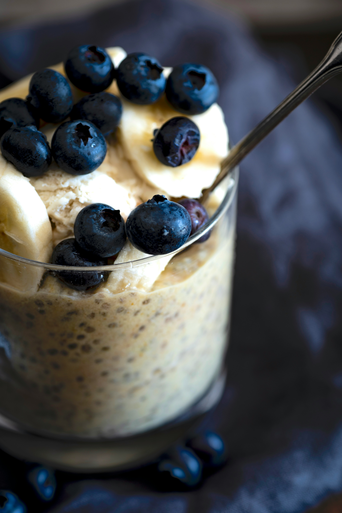

Home
Chia Seed Pudding

Simple Chia Seed pudding recipe. Jump to Macros.
Ingredients
- 2 Tbsp Chia Seeds
- 1/2 Cup Milk of Choice
- 2 tsp Sweetener of Choice
- Pinch of Salt (optional)
- Chopped Fruit of Choice (optional)
Instructions
- In a bowl or mason jar, combine chia seeds, milk, sweetener, and Salt
- Stir or add lid and shake well
- Let sit for abour 10 minutes
- Stir from bottom up
- Cover and refrigerate 2 hours - overnight, until pudding thickens
- Stir and top with (optional) chopped fruit and/or sweetener of choice
- Serve
Additional Information
Add milk if pudding is too thick, add seeds if too thin.
Refrigerate for up to 5 days
Approximate Macros Per Serving
- Calories: 143
- Fat: 9g
- Carbs: 11g
- Protien: 5g